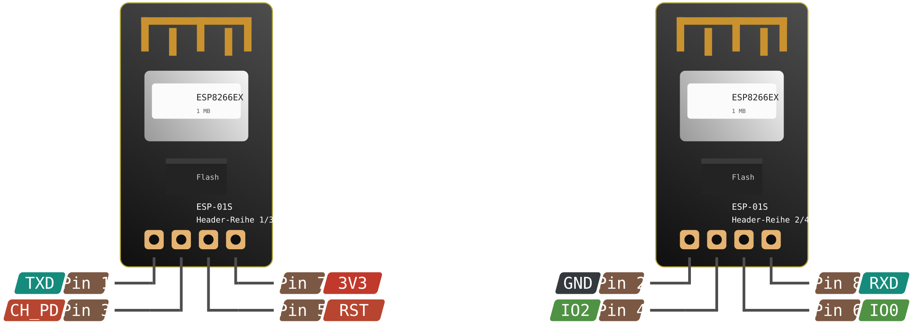

ESP-01 / ESP-01S
eigenes Shield
ESP8266EX · 2×4 Header 2,54 mm

Variante prüfen. Der blaue ESP-01 hat nur 512 KB Flash — WLED passt dort nicht hinein. Du brauchst den schwarzen ESP-01S mit 1 MB. Optisch fast identisch, funktional nicht.
Pinbelegung — Nummerierung wie in deinem Schaltplan (JP2)
| Pin | Signal | Im Shield verdrahtet auf | Anmerkung |
|---|---|---|---|
| 1 | TXD / GPIO1 | offen | Nur zum Flashen / Debug |
| 2 | GND | GND | Gemeinsame Masse mit dem Streifen |
| 3 | CH_PD / EN | 3V3 | Muss dauerhaft HIGH sein, sonst startet nichts |
| 4 | GPIO2 | Q1 → LED_out Pin 2 | Level-geshiftet auf 5 V |
| 5 | RST | 3V3 | Pull-up, aktiv LOW |
| 6 | GPIO0 | Q2 → LED_out Pin 3 | Level-geshiftet auf 5 V |
| 7 | VCC 3V3 | REG1117 VOUT | Niemals an 5 V |
| 8 | RXD / GPIO3 | offen | Nur zum Flashen / Debug |
Minimalbeschaltung — Netzliste aus deinem Eagle-Schaltplan
| Bauteil | Wert | Funktion |
|---|---|---|
| IC1 | REG1117 | 5 V → 3V3 Linearregler |
| C1 / C2 | 10 µF | Ein- und Ausgangspuffer am Regler |
| Q1 / Q2 | BSS138 | Bidirektionale MOSFET-Pegelwandler, Gates an 3V3 |
| R1 / R2 | 10 k → +5 V | Pull-ups auf der Streifen-Seite (Drain) |
| R3 / R4 | 10 k → 3V3 | Pull-ups auf der ESP-Seite (Source) |
| JP1 | 1=+5V · 2=GPIO2 · 3=GPIO0 · 4=GND | LED_out, 4-polig abgewinkelt |
Warum genau zwei Datenleitungen. Am ESP-01 sind nur GPIO0 und GPIO2 nutzbar — das passt exakt auf APA102 / DotStar, die DATA und CLOCK brauchen. Welcher der beiden Pins CLK wird, stellst du in den WLED-LED-Einstellungen ein.
Boot-Falle. GPIO0 und GPIO2 müssen beim Einschalten beide HIGH sein. Die 10-k-Pull-ups im Shield erledigen das — aber ein angeschlossener LED-Streifen kann sie herunterziehen. Wenn das Modul nicht startet: Streifen abziehen und gegenprüfen.